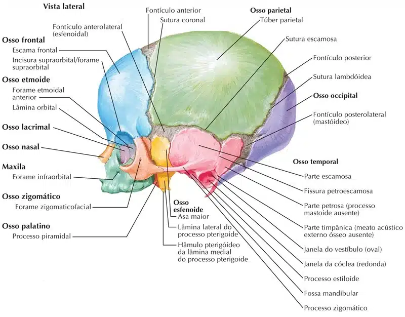
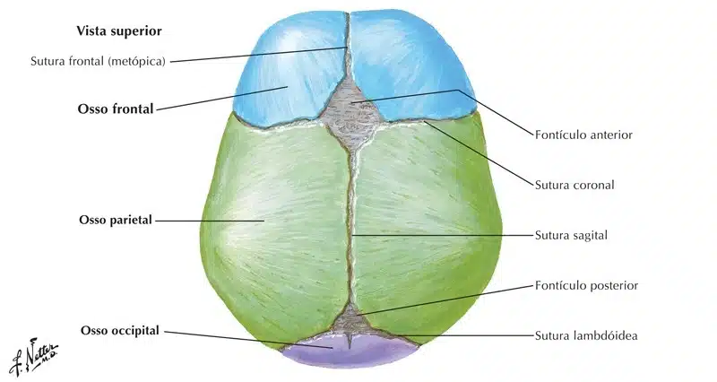
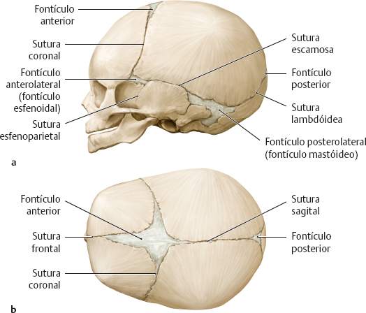
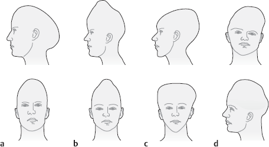
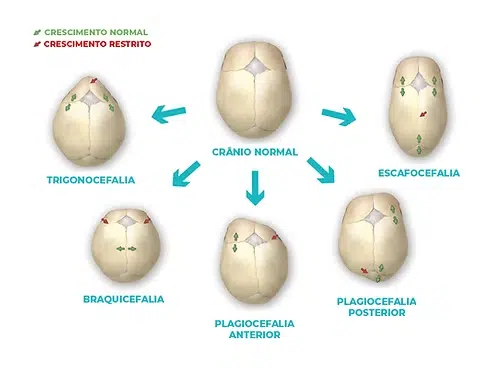
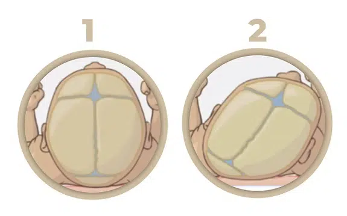
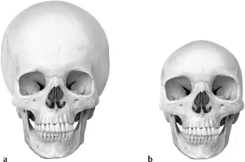

As fontanelas ou fontículos são espaços situados entre os ossos do crânio dos recém-nascidos e fetos.
São vulgarmente chamados “moleiras“.
Desaparecem quando se completa a ossificação dos ossos do crânio.
No crânio do feto e recém-nascido, onde a ossificação ainda é incompleta, a quantidade de tecido conjuntivo fibroso interposto é muito maior, explicando a grande separação entre os ossos e uma maior mobilidade.
É isto que permite, no momento do parto, uma redução bastante apreciável do volume da cabeça fetal pelo “cavalgamento“, digamos assim, dos ossos do crânio.
Esta redução de volume facilita a expulsão do feto para o meio exterior.
O bebê ainda não atingiu o desenvolvimento completo do seu crânio no momento do nascimento e as fontanelas permitem que o osso do crânio continue a crescer até chegar ao seu tamanho adulto.
Existem quatro tipos de fontanelas nos recém-nascidos:
Essas duas primeiras são simétricas e se localizam de cada lado do crânio;


Fontículo posterior: 3º mês;
Fontículo anterolateral: 6º mês;
Fontículo posterolateral: 18º mês;
Fontículo anterior: 36º mês.
O fontículo posterior representa um ponto de referência para avaliar a posição da cabeça da criança durante o parto, bem como para avaliar a ocorrência de hipertensão craniana e estado de desidratação do bebê.;
O fontículo anterior permite a coleta de líquido cerebrospinal em lactentes (ex: em caso de suspeita de meningite).

O fechamento precoce das suturas pode ocasionar deformações características do crânio, que representam variações da norma, mas não são consideradas doenças. As seguintes suturas podem se fechar precocemente e causar deformações cranianas:
a – Sutura sagital (escafocéfalo = crânio em forma de canoa).
b – Sutura coronal (oxicéfalo = crânio pontudo).
c – Sutura escamosa ou frontal (trigonocéfalo = crânio triangular).
d – Fusão assimétrica de suturas, predominantemente sutura coronal (plagiocéfalo = crânio torto).

Na craniossinostose verdadeira, o formato do crânio depende da sutura que está fechada.
O importante é observar o formato do crânio e da face e, principalmente, o desenvolvimento neurológico da criança.

As vezes, o crânio do bebê modifica o formato devido ao apoio persistente em um dos lados da cabeça, sendo muito comum em prematuros.
Nesses casos, chamamos de plagiocefalia posicional ou postural e nada tem a ver com o verdadeiro fechamento de uma sutura do crânio.
Ocorre apenas, por apoio, movimentação progressiva das placas ósseas, como mostra a figura abaixo. O diagnóstico é clínico e em caso de dúvidas uma ultrassonografia de suturas pode ser suficiente.

a – Morfologia característica do crânio em caso de hidrocefalia. Quando o encéfalo é expandido devido ao aumento do líquido cerebrospinal antes da ossificação das suturas (hidrocefalia), o neurocrânio afetado aumenta, enquanto o viscerocrânio permanece inalterado.
b – Em caso de fechamento precoce das suturas ocorre a microcefalia. Observe o neurocrânio diminuto e as órbitas relativamente grandes.
